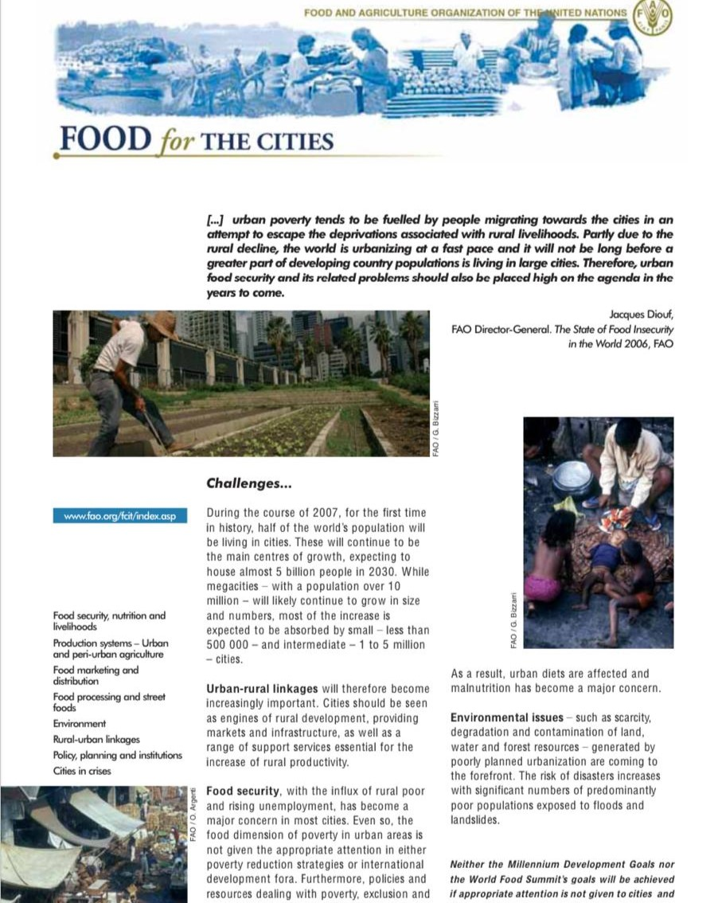

Latest Articles on Urban Farming and Food Security
Explore our latest insights and updates on sustainable urban farming and enhancing food security.
Urban agriCulture and innovative production
Are you farming or gardening in a city or suburb?
From community gardens to indoor vertical farms, urban
agriculture provides critical access to healthy food for local
communities, as well as jobs, increased green spaces, and
closer community ties.
Read More
Urban Agriculture Strategies
Urban agriculture is the process of growing, producing and recycling food scraps in the urban
environment. This might include backyard vegetable gardens, laneway gardens, planter
boxes or larger scale urban community food growing. It can also include local processing and
preserving of food and the composting of food waste.
Read More
Urban Farming-A Stastainable Smart Farming Approach
As rural-urban migration is increasing, the urbanisation poses
a number challenges viz., food insecurity, environmental
pollution, unequal distribution of resources, etc. Among the
many challenges, food provision is gaining importance but omitted
or neglected for long period.
Read More
Partnership For Sustainable Communities
As communities look for sustainable reuses for brownfield
and other abandoned properties and opportunities to provide
healthier food choices to the community, interest in
establishing community gardens and other forms of farming
has been growing in urban areas. Urban farms, however,
present unique challenges that are different from
conventional agricultural development.
Read More
Urban agriculture
and local food production:
feeding our cities future
Nowadays more than 50% of the world population
(3.3 milliard people) is living in cities. In the
Netherlands, the urban population is already more
than 75%. After WWII the main Dutch spatial planning
policy was to concentrate or cluster urbanization.
Read More
Urban Agriculture Impacts: Social, Health, and Economic:
A Literature Review
Across the nation, cities and metropolitan areas and their adjoining peri-urban commu
nities are seeing their landscapes and neighborhoods reflect a growing urban agriculture (UA)
movement. Backyard chickens, community gardens, farmers markets, and community supported
agriculture programs (CSAs) are gaining popularity, as local food continues to find its place on
the tables of urban residents.
Read More

Food For The Cities
The task of feeding the world's cities adequately constitutes an increasingly pressing
challenge, requiring the co-ordinated interaction of food producers, transporters,
market operators and a myriad of retail sellers. [...] Not least, it involves a shared
understanding among city officials and national and international development
agencies of the common problems and the potential solutions faced when seeking to
feed cities on a sustainable basis.
Read More
Urban Agriculture:Findings from Four City Case Studies
Urbanization is one of the defining phenomena of the 21st century. More people live in cities today than ever
before in history, and by 2050 as many people will live in urban areas as the total world population in 2000. Cities
enable economic progress, promote innovation and social cohesion, and improve access for millions of people to
healthcare, education, safe drinking water and electricity, in addition to promoting diversity and cultural activities,
such as theater, music, and art.
Read More
Cultivating Urban Agriculture in New York City
In this report, the NYC Mayor’s Office of Urban Agriculture (MOUA) will
detail how the office plans to grow New Yorkers’ awareness, access,
and activity through urban agriculture in the city.
Read More

Sustainable Practices for Urban Agriculturein Amman
Urban agriculture was historically widely practiced in urban areas in Jordan and the Levant.
The traditional plant palette included fruits such as citrus, figs, pomegranates, grapes, and
stone fruits. Growing vegetables such as tomatoes, cucumbers, radishes, as well as herbs
such as mint, parsley, and basil was also widely practiced.
Read More
Introduction to the Concepts and Types of Urban Agriculture
How can we define what urban agriculture is and what factors are behind the growth of
(peri-)urban agriculture? How do trends in food consumption, urban planning and
professionals influence the development of urban agriculture?.
Read More
Best Practices for the Sustainable Urban Farm
For decades, Urban Farms and comunity
gardens have helped meet the demand for fresh,
local produce. Urban farms are diverse and
adaptable, ranging from small farms on repurposed
vacant lots to multilevel vertical farms and rooftop
gardens. Often, they combine ecological farming
practices with some form of infrastructure.
Read More